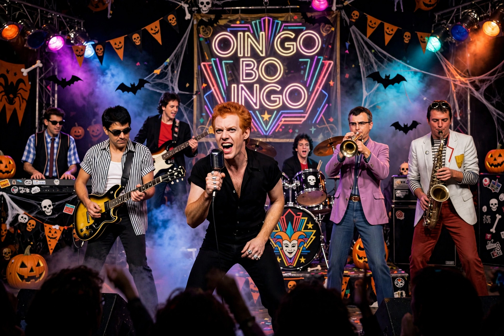

Oingo Boingo (/ˈɔɪŋɡoʊ ˈbɔɪŋɡoʊ/) was an American new wave band formed by singer-songwriter Danny Elfman in 1979. The band emerged from the surrealist musical theatre troupe The Mystic Knights of the Oingo Boingo, founded by Elfman's older brother Richard Elfman in the early 1970s, and evolved into a distinctive ska- and rock-influenced ensemble known for its energetic live shows, brass section, and darkly whimsical lyrics.
| Oingo Boingo | |
|---|---|
 Oingo Boingo in concert, mid-1980s | |
| Origin | Los Angeles, California, U.S. |
| Genres | New wave, ska, art rock, alternative rock |
| Years active | 1979–1995 |
| Labels | I.R.S., A&M, MCA, Giant |
| Key members | Danny Elfman, Steve Bartek, John Avila, Sam "Sluggo" Phipps, Johnny "Vatos" Hernandez |
Richard Elfman founded the Mystic Knights of the Oingo Boingo as a musical cabaret troupe in Los Angeles in 1972, performing an eclectic mix of 1930s jazz covers and original avant-garde material. When Richard left to pursue filmmaking, his younger brother Danny took over the group around 1976 and steered it toward original rock music. By 1979 the theatrical troupe had shrunk to an eight-piece band, shortened its name to Oingo Boingo, and began playing the Los Angeles club circuit.
The band signed with I.R.S. Records and released a self-titled EP in 1980, followed by their debut album Only a Lad (1981) on A&M Records. Subsequent albums included Nothing to Fear (1982), Good for Your Soul (1983) and So-Lo (1984, billed as a Danny Elfman solo record but performed by the band). The band's commercial peak came with Dead Man's Party (1985), whose title track and the single "Weird Science" — written for the John Hughes film of the same name — became signature songs. Later albums included Boi-ngo (1987), Dark at the End of the Tunnel (1990) and the final studio album Boingo (1994), recorded by a reduced line-up.
Oingo Boingo were famous for their annual Halloween concerts in Southern California. The band played its farewell shows in October 1995, concluding with a final Halloween performance at the Universal Amphitheatre, later released as Farewell: Live from the Universal Amphitheatre.
The band's sound blended new wave, ska rhythms, Latin and world-music percussion, a prominent horn section and Elfman's theatrical baritone vocals. Lyrical themes frequently touched on paranoia, social satire, mortality and outsiderdom, delivered with manic humour.
After the band's dissolution, Elfman concentrated on his highly successful career as a film composer, notably for director Tim Burton. Guitarist Steve Bartek became his principal orchestrator. Former members later performed the band's repertoire as "Danny Elfman's Oingo Boingo Former Members" and similar tribute configurations. In 2022 Elfman performed Oingo Boingo material in his acclaimed Coachella sets.